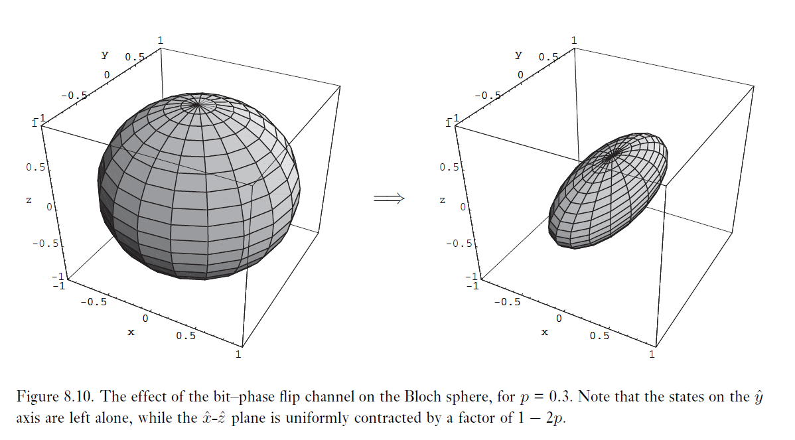

沙漠之所以美丽，是因为不知在哪里藏着一口水井
# 量子噪声和量子运算
- 量子系统是无法做到完全封闭的，就如再精确的机械钟内部也会与空气的摩擦。如果将一个量子比特的状态用一个电子的两个位置来表示的话，那么这个电子将会与其他带电粒子产生交互作用，这种作用成为影响这个量子比特的不能控制的噪声源。
一个开放系统就是与其他环境系统具有交互作用的系统，而这个环境系统的动力学过程我们希望予以忽略或均化。
- 量子运算的数学形式化对于我们描述开放量子系统的动力学过程是一个关键的工具。这种工具不仅可用来描述与其环境弱耦合的近似封闭系统，也可以用于描述与其环境强耦合的系统，以及那些突然被打开并接受测量的封闭系统。
# 经典噪声和 Markov 过程
想象这样一个过程，一个经典比特正被储存到内置于普通经典计算机中的一个硬盘驱动器里，这个比特刚开始为 0 或 1。但在很长一段时间后扰动磁场会对这个比特造成干扰，并可能引起其状态反转。通过引入使这个比特翻转的概率 p 和使这个比特保持原状态的概率为 1-p，我们就可以对这类问题建模。
-
当然，真正发生什么取决于环境包含能造成比特反转的磁场。为了计算模型中的 p，我们需要了解：
- 建立环境中磁场分布的接近真实情况的模型。这可以通过对驱动器运行环境中对磁场采样解决。
- 建立环境中磁场如何与硬盘中比特产生交互的模型。这就是 Maxwell 方程。
利用上面两点我们就可以从原理上来计算在某个规定时间段内驱动器上一个比特会翻转的概率。
-
这个基本过程（找出环境的模型以及系统 - 环境间交互作用的模型）是我们在研究经典噪声和量子噪声中将会反复遵循的过程。与环境的交互作用是基本噪声来源，往往不容易找到针对环境或系统 - 环境交互作用的精确模型。
-
でも，通过在建模中引入保守性和限于研究所观测到的系统性质以判断其是否服从这个模型，那么还是有可能使显示物理提系统中噪声建模达到高的准确度。
-
经典比特的行为非常好刻画。设p0,p1 分别是初始时其处于状态 0 和 1 的概率，q0,q1 是噪声出现后处于状态 0 和 1 的概率。令 X 为其初始状态，Y 为其最终状态，那么有：
P(Y=y)=x∑p(Y=y∣X=x)p(X=x)(q0q1)=(1−ppp1−p)(p0p1)
然后可以考虑若干非门组成的线路，但每个非门都有一定的概率（1-p）不起作用，门之间概率独立。这就有经典的 Markov 过程：
q=Ep
其中，E 是概率转移矩阵，在上述情况中它就是(1−ppp1−p)。
-
Markov 过程中，要去输入p 和输出q 都是一个合法的概率分布。那么关于演化矩阵 E 就有两个限制条件：
- 非负性（positivity）：E 的所有元必须是非负的。
- 完备性（completeness）：E 的所有列必须取和为 1。
-
Markov 过程告诉我们输入概率和输出概率之间具有线性关系，可用转移矩阵描述。在规定噪声是由独立的环境所引起的前提下，包含多级的经典噪声过程可以描述为 Markov 过程。
# 量子运算
-
我们用密度矩阵ρ 来描述量子状态，类似于经典状态变换，量子状态变换可描述为
ρ′=ε(ρ)
这个方程中的映射ϵ 是一个量子运算（quantum operation）。例如在酉变化 U 作用下ρ→ϵ(ρ)=UρU⊺。
-
设我们有一个处于状态ρ 的量子系统，此状态被送到耦合与环境的一个盒子中（一般来说这个系统的最终状态ϵ(ρ) 有可能并不是通过酉变换而与初始状态ρ 相联系的）我们现在假定，系统 - 环境输入状态为一个积状态ρ⊗ρenv，在盒子的变换 U 后，系统不再与环境具有交互作用，从而我们就在环境上执行一个偏迹，以得到系统单独的约化状态：
ε(ρ)=trenv[U(ρ⊗ρenv)U⊺]
上面的定义中做了一个重要的假设，即系统和环境是从一个积状态出发的。
-
事实上，如果主系统状态在 d 维 Hilbert 空间上，那么我们就有能力在不大于d2 维的 Hilbert 空间中对环境进行建模。甚至对环境我们没必要从混合态启动，从纯态启动就够了。这在之后会讨论。
-
我们目前以及可以基于主系统和环境的交互作用来描述量子运算；还可以方便地将这个定义稍作推广允许不同的输入和输出空间。
例如，想象一个记为 A 的单量子比特被制备于某个未知状态ρ，记为 B 的三量子比特系统制备于某个标准状态∣000⟩，然后通过酉交互作用 U 使其与系统 A 产生交互作用，以使联合系统演化到状态U(ρ⊗∣000⟩⟨000∣)U⊺，然后我们丢弃系统 A 而留下系统 B
ε(ρ)=trA(U(ρ⊗∣000⟩⟨000∣)U⊺)
此时ϵ 输入为系统 A 的密度算子，将其映射到系统 B 的密度算子。然而我们一般的讨论都关注将系统 A 的密度算子映射到系统 A 的密度算子的情况，但是也允许这种更一般的定义。
# 算子和表示
ρ⊗∣0⟩⟨0∣=(I⊗∣0⟩)ρ(I⊗⟨0∣)
- 这是为什么？首先，如果假设ρ 是n×n 的，∣0⟩ 是d×1 的，那么根据维度，LHS=nd×nd,RHS=nd×nd 是正确的。实际上：
ρ⊗∣0⟩⟨0∣=(ρ⊗Id)(In⊗∣0⟩)(In⊗⟨0∣)∵(ρ⊗Id)(In⊗∣0⟩)=(ρIn)⊗(Id∣0⟩)=(Inρ)⊗(∣0⟩I1)=(In⊗∣0⟩)(ρ⊗I1)=(In⊗∣0⟩)ρ∴ρ⊗∣0⟩⟨0∣=(In⊗∣0⟩)ρ(In⊗⟨0∣)
- 然后有trB(ρ)=∑i(IA⊗⟨i∣B)ρ(IA⊗∣i⟩B)，事先明确∣i⟩ 为 B 上的基的话，可以记
⟨i∣ρ∣i⟩:=(IA⊗⟨i∣B)ρ(IA⊗∣i⟩B)∣0⟩ρ⟨0∣:=(In⊗∣0⟩)ρ(In⊗⟨0∣)
ε(ρ)=trenv(U[ρ⊗∣0⟩⟨0∣]U⊺)=i∑⟨i∣U[ρ⊗∣0⟩⟨0∣]U⊺∣i⟩=i∑⟨i∣U∣0⟩ρ⟨0∣U⊺∣i⟩=i∑EiρEi⊺Ei=⟨i∣EU∣0⟩E
- 这其实是 Kraus operator-sum representation，用算子和去表示这个偏迹的映射关系。算子{Ek} 称为量子运算ε 的运算元。
# 算子和的物理意义
-
算子和表示量子过程其实有其物理意义。令ρk 为测量环境出现结果 k 时主系统的状态，有：
ρk=trenv(∣ek⟩⟨ek∣U(ρ⊗∣e0⟩⟨e0∣)U⊺)=⟨ek∣U(ρ⊗∣e0⟩⟨e0∣)U⊺∣ek⟩=⟨ek∣U∣e0⟩ρ⟨e0∣U⊺∣ek⟩=EkρEk⊺
归一化后，ρk=tr(EkρEk⊺)EkρEk⊺，其实p(k)=tr(∣ek⟩⟨ek∣U(ρ⊗∣e0⟩⟨e0∣)U⊺∣ek⟩⟨ek∣)=tr(EkρEk⊺)（回忆下p(m)=tr(MmρMm⊺)）
因此
ε(ρ)=k∑EkρEk⊺=k∑p(k)ρk
物理解释为具有运算元{Ek} 的量子运算，那么它的意义就是随机地以概率tr(EkρEk⊺) 进入状态ρk=tr(EkρEk⊺)EkρEk⊺。
-
例：受控非门
受控非门对应得算子U=∣00⟩⟨00∣+∣01⟩⟨01∣+∣11⟩⟨10∣+∣10⟩⟨11∣，其中第一位表示主系统，第二位表示环境状态。如果环境初始状态为∣0⟩，那么
E0=⟨0E∣U∣0E⟩=(IP⊗⟨0E∣)U(IP⊗∣0E⟩)=∣0P⟩⟨0P∣E1=⟨1E∣U∣0E⟩=∣1P⟩⟨1P∣
其中∣0⟩⟨0∣,∣1⟩⟨1∣ 对应得都是主系统 (principal system) 得状态。即
ε(ρ)=E0ρEo+E1ρE1
# 测量与量子和表示
-
我们用 Q 表示主系统，E 表示环境系统，假设系统初始联合状态为ρQE=ρ⊗σ。
我们假设系统是依据某个酉交互 U 来交互作用，在酉交互后，由Pm 所描述的投影测量就在联合系统上被执行。假设出现结果 m，则 QE 得最终状态为
tr(PmU(ρ⊗σ)U⊺Pm)PmU(ρ⊗σ)U⊺Pm
对应 Q 的最终状态为trE(tr(PmU(ρ⊗σ)U⊺Pm)PmU(ρ⊗σ)U⊺Pm)。定义映射：
εm(ρ)≡trE(PmU(ρ⊗σ)U⊺Pm)
注意这里ε 不再是保迹的，即εm(ρ)=1，但是∑mεm 是保迹的。
于是 Q 的最终状态为tr(εm(ρ))εm(ρ)，其实p(m)=tr(εm(ρ))。令σ=∑jqj∣j⟩⟨j∣ 是系统 E 混合态对应的一个系综，对系统 E 引入标准正交基∣ek⟩，注意到：
εm(ρ)=j,k∑qj⟨ek∣PmU(ρ⊗∣j⟩⟨j∣)U⊺Pm∣ek⟩=j,k∑qj⟨ek∣PmU∣j⟩ρ⟨j∣U⊺Pm∣ek⟩qj=j,k∑Ej,kρEj,k⊺Ej,k=qj⟨ek∣PmU∣j⟩
其实就给出了系统初始状态不再是纯态时的一个推广。
# 任意算子和表示的系统 - 环境模型
给定一组算子和{Ek}，是否存在合理的模型环境系统和动力学过程，来对应这些算子和？
-
我们可以构造一个系统，初始状态为ρ⊗∣e0⟩⟨e0∣。（这里ψ 不再指均匀叠加态，而是任意一个向量）定义算子 U 作用效果为：
U∣ψ⟩∣e0⟩=k∑(Ek∣ψ⟩)⊗∣ek⟩
首先证明 U 是一个酉变换，即保持内积
⟨ψ∣⟨e0∣U⊺U∣φ⟩∣e0⟩=k∑⟨ψ∣EkEk⊺∣φ⟩=⟨ψ∣φ⟩=(⟨ψ∣⟨e0)(∣φ⟩∣e0⟩)
这里有个要求，即给出的算子和是只做用在主系统上的。即前面的Ek=⟨ek∣U∣e0⟩。
-
有了这个酉算子 U，就容易验证
trenv(U(ρ⊗∣e0⟩⟨e0∣)U⊺)=k∑⟨ek∣U(ρ⊗∣e0⟩⟨e0∣)U⊺∣ek⟩=k∑⟨ek∣U∣e0⟩ρ⟨e0∣U⊺∣ek⟩
而⟨ek∣U∣e0⟩=(IP⊗⟨ek∣)U(IP⊗∣e0⟩)=∑k′(I⊗⟨ek∣)(Ek′⊗∣ek′⟩)=Ek⊗1=Ek
所以我们就构造出了这样的酉算子 U 和系统初态ρ⊗∣e0⟩⟨e0∣ 满足ε(ρ)=trenv(U(ρ⊗∣e0⟩⟨e0∣)U⊺)=∑kEkρEk⊺。
# 量子运算公理化方法
-
忘记之前对量子运算的学习，下面重新定义量子运算。
量子运算ε 定义为输入空间Q1 的密度算子集合到输出空间Q2 的密度算子集合的一个映射。这个映射满足以下三个公理：
（为方便讨论，只讨论Q1=Q2=Q 的情况）
- 当ρ 为初始状态时，tr(ε(ρ)) 为由ε 表示的量子过程发生的概率。因此有0≤tr(ε(ρ))≤1。
- ε 为Q 的密度矩阵集合上的一个凸线性映射，即ε(∑ipiρi)=∑ipiε(ρi)。
- ε 为完全正映射。即对于任意半正定算子A，ε(A) 也是半正定的。
-
注意此时没再要求ε(ρ) 保持迹为 1。例如ρ 是一个单量子比特状态，ε(ρ),ε′(ρ) 表示对其投影测量。运用量子运算描述测量：
ε(ρ)=∣0⟩⟨0∣ρ∣0⟩⟨0∣,ε′(ρ)=∣1⟩⟨1∣ρ∣1⟩⟨1∣
则各自的概率都可以用tr(ε(ρ)),tr(ε′(ρ)) 正确表示。
-
定理：映射ε 满足以上三个公理，当且仅当存在一个算子集{Ei}，使得ε(ρ)=∑iEiρEi⊺，且有∑iEiE⊺≤I
# 量子和表示的自由度
-
同一个开放量子系统的动力学过程只会对应唯一一个算子和嘛？考虑单量子比特上的量子运算ε(ρ)=E0ρE0⊺+E1ρE1⊺,φ(ρ)=F0ρF0⊺+F1ρF1⊺，其中运算元为：
E0=21I,E1=2ZF0=∣0⟩⟨0∣,F1=∣1⟩⟨1∣∴F0=(E0+E1)/2,F1=(E0−E1)/2∴φ(ρ)=2(E0+E1)ρ(E0⊺+E1⊺)+(E0−E1)ρ(E0⊺−E1⊺)=E0ρE0⊺+E1ρE1⊺=ε(ρ)
所以实际上它们是同一个量子运算。所以同一量子运算的量子和表示的运算元不唯一。所以很不同的物理过程可以在主系统上完成相同的动力学过程。
-
算子和表示中的酉自由性定理：设{E1,...,Em},{F1,...,Fn} 分别为量子运算ε,φ 的运算元，通过对较少的运算元序列中添加零算子，我们可以保证 n=m。那么，ε=φ（即它们是同一个量子运算）当且仅当存在m×m 的酉矩阵 U，满足
⎝⎜⎜⎜⎛E1E2...Em⎠⎟⎟⎟⎞=Um×m⎝⎜⎜⎜⎛F1F2...Fm⎠⎟⎟⎟⎞
-
定理：一个维数为 d 的 Hilbert 空间系统上的所有量子运算ε 都可由包含最多d2 个元的一个算子和来表示：
ε(ρ)=k=1∑MEkρEk⊺,M≤d2
# 量子噪声和量子运算的例子
# 迹与偏迹
量子运算体系的主要用途之一是描述测量的影响。量子运算可被用来描述由量子系统上的测量得到特定结果的概率和由测量引起的系统中的状态改变。
-
与测量相关最简单的运算就是迹映射ρ→tr(ρ)。令H 为ρ 状态所在空间，其标准正交基为∣0⟩,...,∣d−1⟩，H′ 为向量∣0⟩ 张成的一维 Hilbert 空间。有映射：
ε(ρ)=i=0∑d−1∣0⟩⟨i∣ρ∣i⟩⟨0∣ε:H⟼H′
不难验证这个映射满足 “量子运算公理化” 中的三条公理，故其为一个量子运算。而其实ε(ρ)=tr(ρ)∣0⟩⟨0∣，所以除去一个矩阵∣0⟩⟨0∣ 它就相当于迹函数。（然而密度矩阵迹恒为 1 我也不知道这有啥意义）
-
其实更为有意义的是认识到偏迹也是一个量子运算。设我们有一个联合系统 QR，并希望对系统 R 取迹。令∣j⟩ 为系统 R 的一个基，定义线性算子Ei:HQR⟼HQ：
Ei(j∑∣qj⟩λj∣j⟩)≡λi∣qi⟩
其中λi 是复数，∣qj⟩ 为系统 Q 的任意状态。其实想一想可以发现∑j∣qj⟩λj∣j⟩ 可以表示系统 QR 中的任意一个状态。例如∣i⟩∣j⟩ 是 QR 的一组标准正交基，那么∑i,jλij∣i⟩∣j⟩=∑j(∑iλij∣i⟩)∣j⟩=∑jλj∣qj⟩∣j⟩。再定义量子运算ε 有运算元Ei：
ε(ρ)≡i∑EiρEi⊺
记ρ=∑xpx∣x⟩⟨x∣
ε(ρ⊗∣j⟩⟨j′∣)=i∑Ei(ρ⊗∣j⟩⟨j′∣)E⊺=i,x∑pxEi(∣x⟩∣j⟩)(⟨x∣⟨j′∣)E⊺
这里可以解释下Ei∣x⟩∣j⟩ 是什么。根据Ei 的定义，其实为Ei∑t=jj1∣x⟩∣t⟩=j==i?∣x⟩:Nan。所以
ε(ρ⊗∣j⟩⟨j′∣)=x,i∑pxδij∣x⟩⟨x∣δij′∗=x∑px∣x⟩⟨x∣δjj′=ρδjj′=ρtr(∣j⟩⟨j′∣)=trR(ρ⊗∣j⟩⟨j′∣)
很神奇吧。
# 单量子比特量子运算的几何图像
-
之前说过单量子比特非混合态可以用 Bloch 球面上的一点表示，那么任意一个保迹的量子运算等价于映射：
ε:r→r′=Mr+c
其中 M 是一个3×3 实矩阵，c 是一个常向量。实际上，如果我们把量子运算ε 对应的运算元写成
Ei=biI+k=1∑3aikσk
形式的话（其实就是在 Pauli 基下分解），那么令
Mjk=l∑[aljalk∗+alj∗alk+(∣bl∣2−p∑alpalp∗)δjk+ip∑εjkp(blalp∗−bl∗alp)]ck=2il∑j,p∑εjpkaljalp∗
就有之前那个映射关系了。好吧我这里就是抄了遍也不知道有啥用。
-
其实可以重新理解下防射映射\overrightarrow{r}\rightarrow M\overrightarrow{r}+\overrightarrow
考虑矩阵M 的极式分解M=UJ，因为M 是实矩阵，所以M⊺M 是半正定的，即所有特征值为实数且大于等于 0。所以J=M⊺M 是实对称的。在之前介绍极式分解时给出过 U 的形式，其实此时它也是实的，即是正交的。所以有UTU=I，故∣U∣=±1。
所以M=UJ 实际可以理解为沿着 J 确定的主轴进行一次变形，然后绕 U 确定的轴进行一次旋转。再加上位移 c。
- 补充说明，三维矩阵行列式实际上是线性变换前后的有向体积比。而∣U∣=±1，所以实际上 U 是个旋转变换。
# 比特翻转和相位翻转信道
-
单量子比特翻转运算ε(ρ)=pIρI⊺+(1−p)XρX⊺，表示以概率 1-p 翻转状态，p 的概率状态不变。它具有运算子：
E0=pI,E1=1−pX
上图就表示了 Bloch 球面上所有的状态矢量在通过比特翻转信道后，得到的新的 Bloch 球面。左边的球面表示所有纯态的集合，右边的球面明显变扁了，所以有许多混合态。实际上x^ 轴上的状态被保留，而y^−z^ 平面均匀收缩了一个1−2p 因子。
几何图像给我们信道的一些很直观的性质。譬如对于单量子比特ρ=21(1+rzrx+iryrx−iry1−rz)，有tr(ρ2)=(1+∣r∣2)/2。所以实际上在比特翻转过程中tr(ρ2) 是只会缩减的。
-
单量子比特相位翻转运算ε(ρ)=pIρI⊺+(1−p)ZρZ⊺，表示以 1-p 概率相位翻转，p 概率不变。其运算子为：
E0=pI,E1=1−pZ
上图就是相位反转的几何意义。特别地，当p=1/2 时，投影(rx,ry,rz)→(0.0,rz)，即会缩成一条线。
-
对于比特 - 相位翻转ε(ρ)=pIρI⊺+(1−p)YρY⊺，几何就是保留y^ 然后压缩x^−z^：

# 去极化信道
-
考虑这样一个量子运算：单量子比特以概率 p 被完全混合态I/2 替代，以 1-p 概率不变。即：
ε(ρ)=2pI+(1−p)ρ
其 Bloch 球面作用如下：
-
实际上，对于任意ρ 有
2I=4ρ+XρX+YρY+ZρZ
代入量子运算，有
ε(ρ)=(1−43p)ρ+4p(XρX+YρY+ZρZ)
即其运算元为1−43pI,2pX,2pY,2pZ。